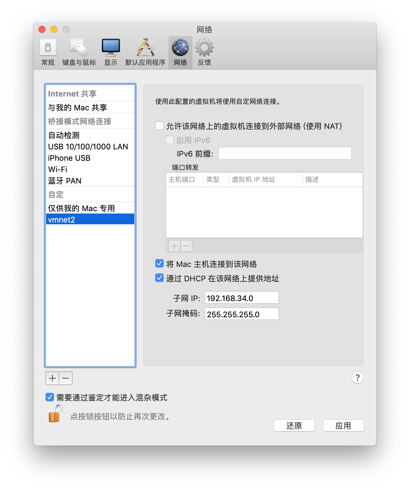
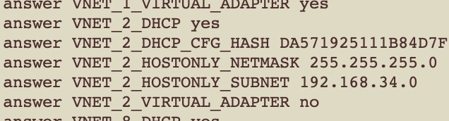
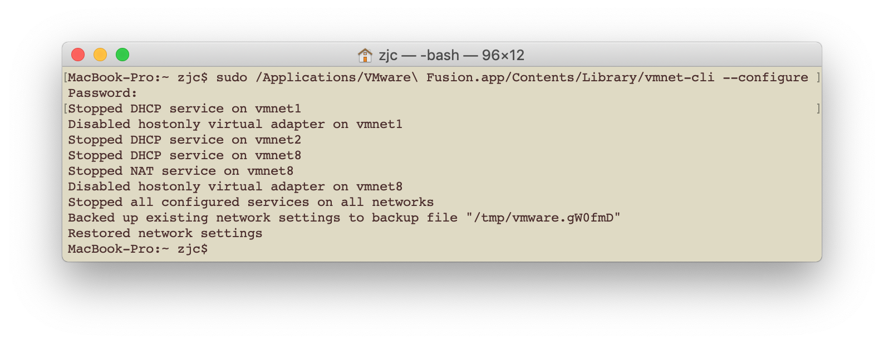

VMWare Fusion 配置文件所在目录/Library/Preferences/VMware Fusion/
当增加vmnet2网卡时

VMWare Fusion会在networking文件中增加相应字段

运行命令sudo /Applications/VMware\ Fusion.app/Contents/Library/vmnet-cli --configure，VMWare Fusion 会根据网络配置文件networking生成相应的虚拟网卡配置文件(在vmnet*下)

禁用虚拟网卡sudo /Applications/VMware\ Fusion.app/Contents/Library/vmnet-cli --stop
开启虚拟网卡sudo /Applications/VMware\ Fusion.app/Contents/Library/vmnet-cli --start